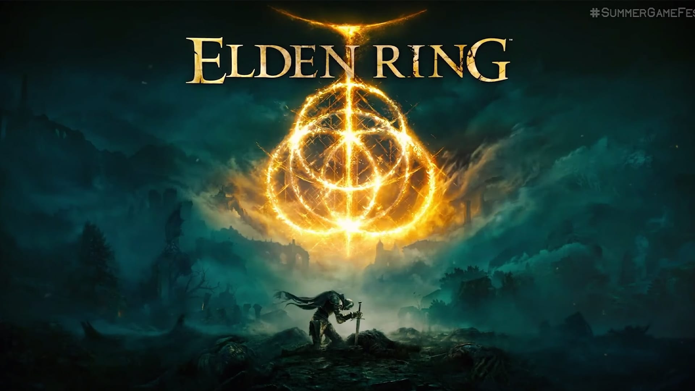
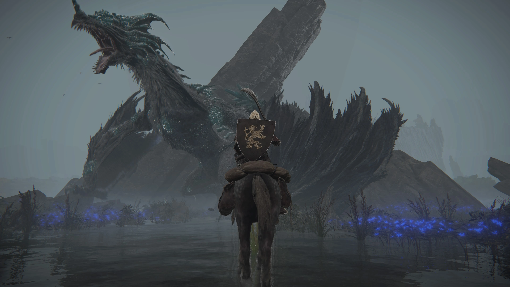

Start
StartElden Ring

Elden Ring is an action role-playing game played in a third person perspective, with gameplay focusing on combat and exploration. It features elements similar to those found in other games developed by FromSoftware, such as the Dark Souls series, Bloodborne, and Sekiro: Shadows Die Twice. Set in an open world, players are allowed to freely explore the Lands Between and its six main areas; these locations range from Limgrave, an area featuring grassy plains and ancient ruins, to Caelid, a wasteland home to undead monsters. Open world areas are explorable using the character's mount, Torrent, as the primary mode of transportation, along with the ability to fast travel outside of combat.
Throughout the game, players encounter non-player characters (NPCs) and enemies, including the demigods who rule each main area and serve as the game's main bosses. Aside from open world areas, Elden Ring also features hidden dungeons, such as catacombs, tunnels, and caves where players can fight bosses and gather helpful items

The player chooses a character class at the start of the game, which determines their starting spells, equipment, and attributes. Combat with enemies can be within melee range, or from a distance using ranged weapons or spells. Attacks from enemies can be blocked using shields or avoided by dodging. Spells in Elden Ring allow the player to enhance their own weapons, fight enemies from afar, and restore lost hit points. The player can memorize a limited amount of spells, which can be cast using a staff or Sacred Seal item Weapons in Elden Ring can be improved using Ashes of War, obtainable "enchantments" that grant weapons new capabilities. Ashes of War can be applied to or removed from weapons, and each Ash adds a Weapon Art, a special ability that can be used during combat Aside from direct combat, stealth mechanics can be used to avoid enemies entirely, or allow for the targeting of foes with critical hits while hidden.
